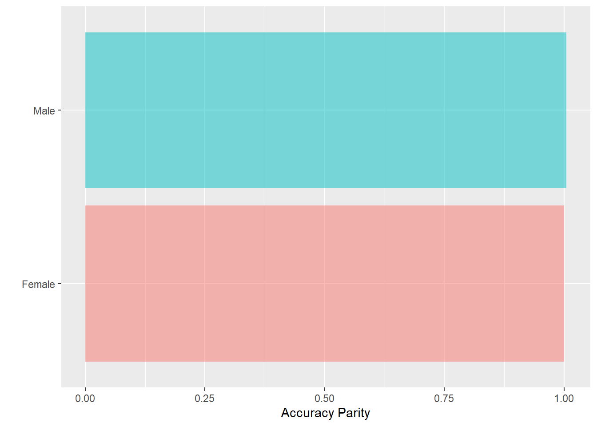
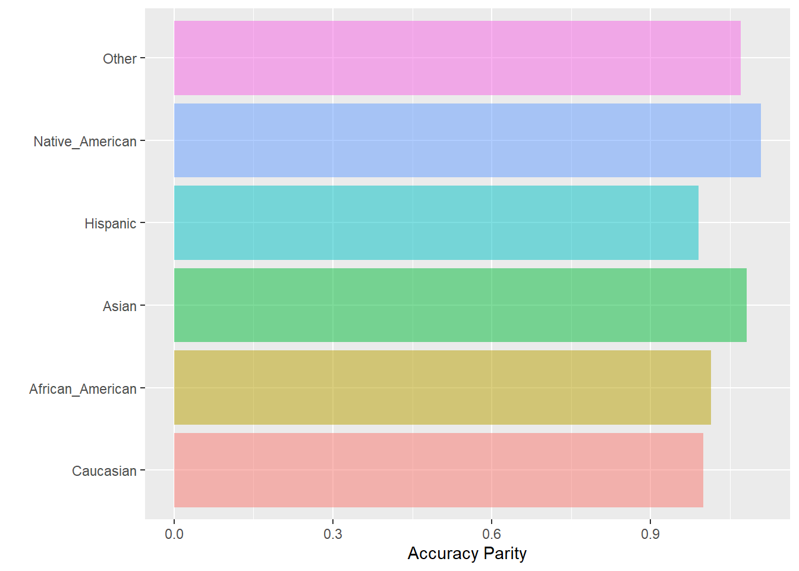
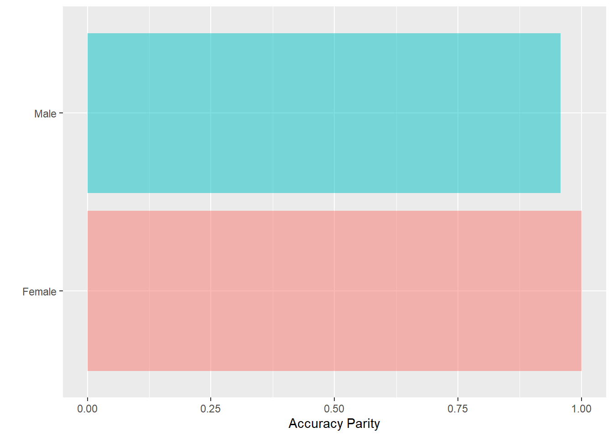
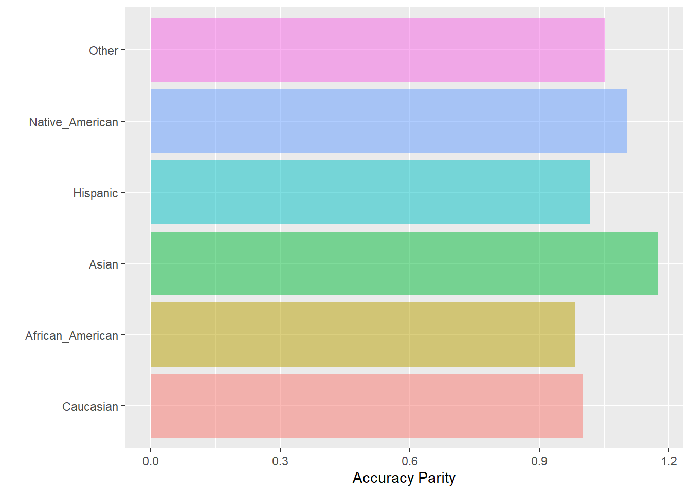

library(tidyverse)
library(randomForest)
library(caret)
library(fairness)8 Fairness og tuning
8.1 Introduksjon til fairness
Det blir litt repetisjon her nå. Det grunnleggende med fairness har vi vært innom før, men nå gjør vi det i kontekst av random forest. En ting er å avdekke bias og urettferdighet, en annen ting er å gjøre noe med det!
Compas er et risikoverktøy brukt av amerikansk politi i flere stater som benyttes på individnivå. Bruken av dette verktøyet har vært kontroversielt i flere år og kraftig kritisert av flere. En viktig grunn er at prediksjonene slår forskjellig ut for ulike grupper og er slik sett “biased” mot bl.a. svarte borgere. Resultatet er at de blir mer utsatt for politiets oppmerksomhet enn andre.1 Et datasett er gjort tilgjengelig av Propublica her som vi skal bruke.
compas <- readRDS("../data/compas.rds")
glimpse(compas)Rows: 6,172
Columns: 7
$ Two_yr_Recidivism <fct> 0, 1, 1, 0, 1, 0, 0, 0, 1, 0, 0, 1, 1, 0, 0, 1, 1…
$ Number_of_Priors <int> 0, 0, 4, 0, 14, 3, 0, 0, 3, 0, 0, 1, 7, 0, 3, 6, …
$ Age_Above_FourtyFive <fct> 1, 0, 0, 0, 0, 0, 0, 0, 0, 0, 0, 1, 0, 0, 0, 0, 0…
$ Age_Below_TwentyFive <fct> 0, 0, 1, 0, 0, 0, 0, 0, 1, 0, 0, 0, 0, 0, 0, 0, 0…
$ Misdemeanor <fct> 0, 0, 0, 1, 0, 0, 1, 0, 1, 1, 0, 0, 0, 1, 0, 0, 0…
$ Ethnicity <fct> Other, African_American, African_American, Other,…
$ Sex <fct> Male, Male, Male, Male, Male, Male, Female, Male,…Vi tilpasser først en random forest modell.
set.seed(4356)
glimpse(compas)Rows: 6,172
Columns: 7
$ Two_yr_Recidivism <fct> 0, 1, 1, 0, 1, 0, 0, 0, 1, 0, 0, 1, 1, 0, 0, 1, 1…
$ Number_of_Priors <int> 0, 0, 4, 0, 14, 3, 0, 0, 3, 0, 0, 1, 7, 0, 3, 6, …
$ Age_Above_FourtyFive <fct> 1, 0, 0, 0, 0, 0, 0, 0, 0, 0, 0, 1, 0, 0, 0, 0, 0…
$ Age_Below_TwentyFive <fct> 0, 0, 1, 0, 0, 0, 0, 0, 1, 0, 0, 0, 0, 0, 0, 0, 0…
$ Misdemeanor <fct> 0, 0, 0, 1, 0, 0, 1, 0, 1, 1, 0, 0, 0, 1, 0, 0, 0…
$ Ethnicity <fct> Other, African_American, African_American, Other,…
$ Sex <fct> Male, Male, Male, Male, Male, Male, Female, Male,…rf <- randomForest(Two_yr_Recidivism ~ .,
#importance = TRUE,
data = compas)Lager en prediksjon i en kopi av datasett, mest for å ikke blande sammen prediksjonene med det opprinnelige datasettet.
compas_p <- compas %>%
mutate(pred_rf = predict(rf)) Da kan vi lage en confusion matrix for å se hvordan modellen fungerer.
confusionMatrix(compas_p$pred_rf,
compas_p$Two_yr_Recidivism, positive="1")Confusion Matrix and Statistics
Reference
Prediction 0 1
0 2462 1132
1 901 1677
Accuracy : 0.6706
95% CI : (0.6587, 0.6823)
No Information Rate : 0.5449
P-Value [Acc > NIR] : < 2.2e-16
Kappa : 0.3313
Mcnemar's Test P-Value : 3.378e-07
Sensitivity : 0.5970
Specificity : 0.7321
Pos Pred Value : 0.6505
Neg Pred Value : 0.6850
Prevalence : 0.4551
Detection Rate : 0.2717
Detection Prevalence : 0.4177
Balanced Accuracy : 0.6645
'Positive' Class : 1
For å få litt bedre grep om hvordan fairness-pakken fungerer kan gjøre det mer manuelt først. Vi kan f.eks. se på hvordan modellen slår ut for menn og kvinner.
Først kan vi da splitte datasettet i to etter kjønn. Her for menn.
compas_1 <- compas_p %>%
filter(Sex == "Male")Confusion matrix for menn blir da tilsvarende som tidligere.
confusionMatrix(compas_1$pred_rf,
compas_1$Two_yr_Recidivism, positive="1")Confusion Matrix and Statistics
Reference
Prediction 0 1
0 1807 897
1 794 1499
Accuracy : 0.6616
95% CI : (0.6483, 0.6747)
No Information Rate : 0.5205
P-Value [Acc > NIR] : < 2e-16
Kappa : 0.3209
Mcnemar's Test P-Value : 0.01312
Sensitivity : 0.6256
Specificity : 0.6947
Pos Pred Value : 0.6537
Neg Pred Value : 0.6683
Prevalence : 0.4795
Detection Rate : 0.3000
Detection Prevalence : 0.4589
Balanced Accuracy : 0.6602
'Positive' Class : 1
Merk at vi her fikk en accuracy på 0.66 for menn. Splitter datasettet i to etter kjønn. Her for kvinner.
compas_2 <- compas_p %>%
filter(Sex == "Female")Confusion matrix for kvinner
confusionMatrix(compas_2$pred_rf,
compas_2$Two_yr_Recidivism, positive="1")Confusion Matrix and Statistics
Reference
Prediction 0 1
0 655 235
1 107 178
Accuracy : 0.7089
95% CI : (0.682, 0.7348)
No Information Rate : 0.6485
P-Value [Acc > NIR] : 6.251e-06
Kappa : 0.3128
Mcnemar's Test P-Value : 6.539e-12
Sensitivity : 0.4310
Specificity : 0.8596
Pos Pred Value : 0.6246
Neg Pred Value : 0.7360
Prevalence : 0.3515
Detection Rate : 0.1515
Detection Prevalence : 0.2426
Balanced Accuracy : 0.6453
'Positive' Class : 1
Merk at vi her fikk en accuracy på 0.71 for kvinner. Modellen er altså mer presis for kvinner enn for menn. Dette er et eksempel på bias i modellen. Forholdet mellom feilrater er da \(.66/.71 = .93\). Dette tallet sier at modellens accuracy for menn er 93% av accuracy for kvinner, og dette er et mål på bias i modellen. Om man synes det er mye eller lite er derimot en vurderingssak!
Man kan også regne ut den andre veien, altså kvinner delt på menn. Da får vi 1.08, som sier at modellen er 8% mer presis for kvinner enn for menn. Det blir jo det samme, men motsatt vei. Vi må altså velge referansegruppe for sammenligningen.
Funksjoner acc_parity fra fairness-pakken gjør akkurat dette: regner ut accuracy for ulike grupper og sammenligner dem. Her er koden:
acc <- acc_parity(data = compas_p,
outcome = 'Two_yr_Recidivism',
group = 'Sex',
preds = 'pred_rf',
base = 'Female')
acc$Metric Female Male
Accuracy 0.7089362 0.661597
Accuracy Parity 1.0000000 0.933225
Group size 1175.0000000 4997.000000Men spesifiserer altså hvilke variable som er utfallsvariabel, hvilken som er gruppevariabel, hvilken som er prediksjonsvariabel og hvilken gruppe som skal være referanse.
Fairness-pakken har også noen innebygde funksjoner for grafiske fremstillinger.
acc$Metric_plot
8.2 Fairness: tuning med stratifisering
Vi har lært litt om grunnleggende tuning. For å justere feilratene er den mest effektive måten i random forest å endre hvordan samplingen skjer ved sampsize.2 Dette hjelper imidlertid ikke nødvendigvis mot bias, altså ulike feilrater for undergrupper. Det vil jo være nyttig om man kunne gjøre noe med slike skjevheter! Heldigvis kan vi det, men det er ikke så lett som man skulle håpe.
Det viktige punktet å huske på er at random forest trekker tilfeldige utvalg for hvert tre og parameteren sampsize justerer hvor mange observasjoner som trekkes. Vi kan nå justere algoritmen til å gjøre en stratifisert trekning. Med andre ord: det gjøres en tilfeldig trekning innenfor subgrupper. Ovenfor har vi altså sett at modellen ikke er helt rettferdig med hensyn på kjønn. La oss fikse det!
Først må vi lage en vektor for å stratifisere etter. Dette bør være variabelen for kjønn kombinert med utfallsvariabelen. Da får vi fire kategorier: menn med og uten tilbakefall, og kvinner med og uten tilbakefall. Så kan vi bruke sampsize til å angi hvor mange som skal trekkes fra hver av disse fire gruppene.
Her er en kode for å lage en slik stratifiseringsvektor. Pussig nok skal denne vektoren ikke legges inn som en del av datasett, men i et eget objekt. I koden nedenfor bruker vi mutate() for å lage en ny variabel og paste0() for å “lime sammen” de to variabelene. Til sist bruker pull() for å trekke ut kun den variabelen i en egen vektor.3 Koden nedenfor gir også en tabell med antall observasjoner i hver kategori av denne vektoren.
strat <- compas %>%
mutate(strat = paste0(Sex, Two_yr_Recidivism)) %>%
pull(strat)
table(strat)strat
Female0 Female1 Male0 Male1
762 413 2601 2396 Merk at denne vektoren har verdiene som er en kombinasjon av de opprinnelige variablene. Når vi nå angir tall i sampsize() så er det i denne samme rekkefølgen. Her blir det altså:
- Kvinner uten tilbakefall
- Kvinner med tilbakefall
- Menn uten tilbakefall
- Menn med tilbakefall
Merk da at tallene som angis for sampsize ikke kan være høyere enn antallet i hver gruppe, og helst ikke høyere enn ca 70% av dette. Men det er primært forholdet mellom tallene som er viktig.
Her er kode for random forest med stratifisert utvalg og angitte verdier av sampsize. Tallene oppgis i den rekkefølgen som er angitt i variabelen strata, altså som i tabellen ovenfor. Her er altså kvinner vektet lavere enn menn, som burde øke accuracy for menn. Samtidig er kvinner med tilbakefall vektet litt høyere enn kvinner uten tilbakefall.
set.seed(45)
rf <- randomForest(Two_yr_Recidivism ~ .,
data = compas,
strata = strat,
sampsize = c(215, 290, 1500, 1500),
ntree=800)Nå kan vi lage en prediksjon og se om modellen er mer rettferdig på samme måte som vi har gjort tidligere.
compas_p <- compas %>%
mutate(pred_rf = predict(rf))
acc <- acc_parity(data = compas_p,
outcome = 'Two_yr_Recidivism',
group = 'Sex',
preds = 'pred_rf',
base = 'Female')
acc[[2]]
Magisk! Plutselig har vi endret en modell med innebygde kjønnsforskjeller til en kjønnsnøytral modell. I hvert fall på akkurat dette målet, da. Man bør jo også sjekke andre relevante mål på fairness.
Nå lurer du helt sikkert på hvordan du skal velge verdier for sampsize i et slikt tilfelle. Det litt skuffende svaret er at du må prøve deg litt frem. Men det hjelper å vite hvilket tall som betyr hva. I dette eksempelet sikres det at det trekkes omtrent like mange kvinner med og uten tilbakefall, og tilsvarende for menn. Så er det justert litt for å oversample kvinner med tilbakefall. Men for å være ærlig: jeg testet en god del varianter her før jeg fikk det resultatet jeg ville ha.
8.2.1 Hva andre subgrupper?
Så er spørsmålet om den balansering vi nå har gjort slår ut på andre grupper også. La oss se på etnisitet. Vi bruker den samme modellen som over, men bytter ut variabelen for kjønn med variabelen for etnisitet.
acc <- acc_parity(data = compas_p,
outcome = 'Two_yr_Recidivism',
group = 'Ethnicity',
preds = 'pred_rf',
base = 'Caucasian')
acc[[2]]
Det er lov å bli litt skuffa nå. Dette ble jo ikke like pent balansert som for kjønn. Men det er jo ikke så rart, egentlig. Det er jo ikke gjort noe for å balansere på etnisitet.
En første mulighet er å gjøre en vurdering på om kjønnsbalanse eller etnisitet er viktigst. Kanskje man heller skulle fokusere på etnisitet? Det vil antakeligvis ikke være noen dum ide.
En annen mulighet er å stratifisere på begge variable samtidig. La oss undersøke muligheten ved å lage en tilsvarende stratifiserings-vektor og se på frekvensfordelingen.
strat <- compas %>%
mutate(strat = paste0(Sex, Ethnicity, Two_yr_Recidivism)) %>%
pull(strat)
table(strat)strat
FemaleAfrican_American0 FemaleAfrican_American1 FemaleAsian0
346 203 1
FemaleAsian1 FemaleCaucasian0 FemaleCaucasian1
1 312 170
FemaleHispanic0 FemaleHispanic1 FemaleNative_American1
56 26 2
FemaleOther0 FemaleOther1 MaleAfrican_American0
47 11 1168
MaleAfrican_American1 MaleAsian0 MaleAsian1
1458 22 7
MaleCaucasian0 MaleCaucasian1 MaleHispanic0
969 652 264
MaleHispanic1 MaleNative_American0 MaleNative_American1
163 6 3
MaleOther0 MaleOther1
172 113 Problemet nå er jo at noen grupper er veldig, veldig små. Å stratifiser på disse vil ikke fungere rett og slett. Det er som i annen statistikk: Estimere på veldig små grupper innebærer at det blir bare støy og tilfeldigheter i estimatene.
strat <- compas %>%
mutate(caucasian = ifelse(Ethnicity == "Caucasian", "Caucasian", "Other")) %>%
mutate(strat = paste0(Sex, caucasian, Two_yr_Recidivism)) %>%
pull(strat)
table(strat)strat
FemaleCaucasian0 FemaleCaucasian1 FemaleOther0 FemaleOther1
312 170 450 243
MaleCaucasian0 MaleCaucasian1 MaleOther0 MaleOther1
969 652 1632 1744 La oss prøve med dette.
set.seed(45)
rf <- randomForest(Two_yr_Recidivism ~ .,
data = compas,
strata = strat,
sampsize = c(120, 120,
200, 200,
400, 400,
900, 900),
ntree=800)
#rfcompas_p <- compas %>%
mutate(pred_rf = predict(rf))
acc <- acc_parity(data = compas_p,
outcome = 'Two_yr_Recidivism',
group = 'Sex',
preds = 'pred_rf',
base = 'Female')
acc[[2]]
acc <- acc_parity(data = compas_p,
outcome = 'Two_yr_Recidivism',
group = 'Ethnicity',
preds = 'pred_rf',
base = 'Caucasian')
acc[[2]]
Her ble det i hvert fall annerledes, men ikke helt likt nå heller. Nå kan man drive på en stund å justere og se hva man får til. Hvis man har et veldig stort datasett (som vi ikke har her) så kan man i teorien justere for flere ulike egenskaper samtidig og i større detalj. Man er rett og slett litt begrenset av dataene.
Problemet er selvsagt at det ikke går an å justere i det uendelige for alle variable. I tillegg kan det uansett være andre egenskaper du ikke har data for som det senere vil vise seg er urettferdig. Det kan f.eks. slå ut svært skjevt for type nabolag, sosioøkonomisk status, religiøs tilhørighet, lengde på håret - eller hva som helst annet. Man trenger data for å sjekke, men også data for å bygge algoritmen.
Jeg tror konklusjonen er at man justere for noe, men ikke alt. Men med nok data kan man justere for mer - men fremdeles ikke alt. I tillegg er som regel ikke justeringer gratis. Kanskje blir presisjonen i modellen totalt sett dårligere?
Så da er vi tilbake til det litt ubehagelige gjennomgangstemaet om prioriteringer og valg: Vil du f.eks. ha en rettferdig modell eller en presis modell? Hvilke grupper bør den være rettferdig for - og hvilke grupper er det ikke så farlig om den er urettferdig for? Dette kan lett være umulige valg. Men hva er så alternativet? Det er jo heller ikke sikkert er bedre på noen av disse parametrene.
8.3 Oppgaver
Exercise 8.1 Gå gjennom eksempelet over og sjekk at det fungerer og at du skjønner hvert steg.
Exercise 8.2 Velg deg et annet datasett og gjør tilsvarende analyse. Det er viktig at du nå gjør en vurdering av hvilke undergrupper du synes er viktigst å motvirke urettferdighet for. Her bør du ta hensyn også til hva slags tiltak og konsekvenser det er snakk om! Skriv ned dine vurderinger om dette som begrunnelse for hvordan du vil motvirke urettferdighet i modellen.
- Vurder hvilke konsekvenser prediksjonen kan få, med henblikk på et tenkt praktisk tiltak. Hvilke feilrater vil du akseptere? Ta et valg.
- Estimer modellen som tidligere, lag en confusion matrix og vurder resultatet. Juster modellen til du er fornøyd med resultatet.
- Vurder hvilken undergruppe du synes det er viktigst at ikke blir biased.
- Hvilket mål på fairness synes du er viktigst i akkurat dette tilfellet? Velg ett mål, begrunn det valget og sjekk.
- Estimer modellen på nytt med stratifisert utvalg og justert
sampsize. Prøv deg frem til du får et akseptabelt mål på fairness. - Sjekk confusion matrix og sammenlign med den første modellen. Modellen ble kanskje mer rettferdig, men gikk f.eks. accuracy ned eller endrede feilrater? Eller litt flåsete sagt: Var det verd å få en mer rettferdig modell?
- Sjekk nå det samme målet på fairness med to andre undergrupper. Ble det like bra?
Exercise 8.3 Velg et annet datasett og gjør tilsvarende øvelse.
Det er verd å minne på at politi i USA i stor grad er mer hardhendte enn norsk politi. Konsekvensene er altså litt mer alvorlig enn at unødig mange føler seg unødig mistenkte.↩︎
Dette er ikke eneste måten å tune på, men det vi dekker her. Det finnes andre funksjoner for random forest som inneholder mer funksjonalitet for tuning.↩︎
For de av dere som kan en del R fra før:
select()ville gjort noe tilsvarende, men da ville objektet være en data.frame med én variabel fremfor en vektor. Forskjellen er minimal, menrandomForest()vil ha det på denne måten.↩︎